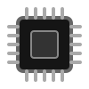
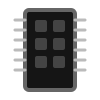

Single Go binary
Under 5 MB. No runtime, no Python, no Node.js. Ships as a statically-linked executable.
Home Server Watchman

CPU
RAMsudo pidex update — pulls the latest release from GitHub. One command, restarts itself.sudo pidex setup walks you through credentials, toggles, thresholds, and intervals.# Install PiDex $ curl -sSL https://raw.githubusercontent.com/Shivamingale3/pi_dex/main/deploy/install.sh | sudo bash # Configure your Telegram credentials $ sudo pidex setup # Start the daemon $ sudo systemctl enable --now pidex # (Optional) Get shutdown alerts too $ sudo systemctl enable pidex-shutdown
| Command | What it does |
|---|---|
| pidex run | Start the daemon (runs as pidex user via systemd) |
| pidex setup | Interactive configuration wizard (9 settings) |
| pidex test <event> | Send a test notification — ssh-login, ssh-fail, sudo-used, docker-down, reboot |
| pidex test <event> --dry-run | Print event without sending to Telegram |
| pidex update | Check GitHub for the latest release and self-update |
| pidex uninstall | Remove PiDex, systemd services, and config |
| pidex version | Show installed version |
| pidex help | Show usage |

Building scalable digital infrastructure with precision and aesthetic excellence. Currently engineering solutions at Leadows Technologies. Specializing in Next.js, React, and Java Spring Boot.
View Portfolio →